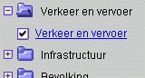
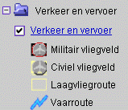

Kaartlagen en de legenda
Het kaartbeeld bestaat uit verschillende kaartlagen die als de doorzichtige velletjes voor bij een overhead projector over elkaar worden gelegd en zo de complete kaart vormen. De legenda is de verklaring van deze kaartlagen en objecten in die kaartlagen. De legenda is een lijst van alles wat in het kaartbeeld aanwezig kan zijn.Een kaartlaag bestaat uit één of meer legenda onderdelen. In deze tekst wordt voor de eenvoud verder geen onderscheid gemaakt tussen kaartlaag en legenda onderdeel.
Op de bekende Windows manier kunnen legenda onderdelen open en dichtgeklapt worden door op het mapje te klikken:
 het onderdeel "Verkeer en vervoer" is dicht
het onderdeel "Verkeer en vervoer" is dicht
-
het onderdeel "Verkeer en vervoer" is open
Als het legenda onderdeel wel geopend is maar er geen afbeelding bij staat betekent dit dat het legenda onderdeel op dat moment niet in de kaart getoond kan worden. De reden is dan dat er niet ver genoeg ingezoomd of juist te ver ingezoomd is. Het wel of niet tonen van kaartlagen en legenda onderdelen is dus zoals het heet schaalafhankelijk. Zie ook de uitleg over Kaartschaal.
In de afbeelding hierboven is er dus niet voldoende ingezoomd om de kaartlaag "Verkeer en vervoer" te kunnen tonen in de kaart. De afbeelding hiernaast geeft de situatie weer wanneer wel voldoende is ingezoomd en de kaartlaag "Verkeer en vervoer" daardoor wel getoond wordt in de kaart.
Legenda onderdelen kunnen ook handmatig UIT en weer AAN worden gezet door middel van het vinkje. Een vinkje betekent dat het legenda onderdeel getoond moet worden. Mits de huidige kaartschaal dat toelaat uiteraard, zoals hierboven beschreven. Niet alle legenda onderdelen kunnen uit worden gezet zoals de onderste afbeelding laat zien.
Als de naam van een legenda onderdeel een link is (blauwe onderstreepte tekst), is een nadere beschrijving op te vragen door op die link te klikken. Deze zogenaamde legenda uitleg verschijnt in hetzelfde venster als waarin deze tekst zich nu bevindt.